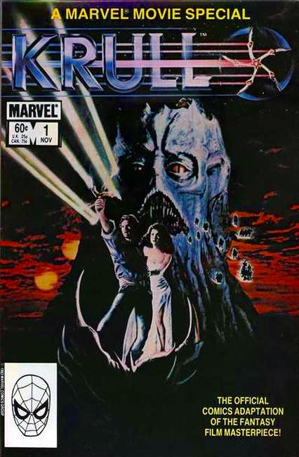
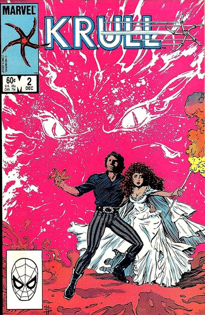

Krull is a 1983 British-American science fantasy swashbuckler film directed by Peter Yates and produced by Ron Silverman with a screenplay by Stanford Sherman. It follows a journey of Prince Colwyn and his group of outlaws on the planet Krull to save future queen Princess Lyssa from a creature named "The Beast" and his constantly teleporting lair named the "Black Fortress."
The film began development in 1980, when Columbia Pictures president Frank Price gave Silverman the idea to produce a fantasy film, and was finally released in July 1983. Yates' directing on Krull differed from his previous films that were more realistic; he took the "challenge" of directing a motion picture like Krull since he could rely only on his imagination instead of doing research, and screenplays that encouraged experimentation with modern special effects were rare in the early 1980s.
Krull consists of an ensemble cast of Ken Marshall as Prince Colwyn, Lysette Anthony as Princess Lyssa, Trevor Martin as the voice of the Beast, Freddie Jones as Ynyr, Bernard Bresslaw as Rell the Cyclops, David Battley as Ergo the Magnificent, Tony Church and Bernard Archard as kings and the fathers of Colwyn and Lyssa, Alun Armstrong as the leader of a group of bandits that include early screen roles for actors Liam Neeson and Robbie Coltrane, John Welsh as The Emerald Seer, Graham McGrath as Titch, and Francesca Annis as The Widow of the Web.
Krull went through a very expensive, harsh, and dangerous production process. The film's huge budget mainly came from the designers having to make numerous alterations to the sets. Krull was shot at several sound stages at Pinewood Studios, and actors such as Marshall, Bernard Bresslaw, and Freddie Jones had to perform dangerous and deadly stunts during filming.
Despite these efforts, the film was a commercial failure upon release, and critical opinion, both upon release and in retrospect, has been mixed. Numerous reviewers have highlighted its visual effects and soundtrack, while several critics have criticized its derivative and nonsensical plot. However, the film has gone on to achieve cult film status.
A narrator describes a prophecy regarding "a girl of ancient name that shall become queen", which says "that she shall choose a king, and that together they shall rule their world, and that their son shall rule the galaxy".
The planet Krull is invaded by an entity known as the "Beast" and his army of futuristic "Slayers", who travel the galaxy in a mountain-like spaceship called the Black Fortress. In a ceremony involving the newlyweds exchanging a handful of flame, Prince Colwyn and Princess Lyssa plan to marry and form an alliance between their rival kingdoms in the hope that their combined forces can defeat the Beast's army. The Slayers attack the wedding before it is completed, killing the two kings, devastating both armies and kidnapping the princess.
Prince Colwyn is found and nursed by Ynyr, the Old One. Ynyr tells him the Beast can be defeated with the "Glaive", an ancient, magical, five-pointed throwing weapon. Colwyn retrieves the Glaive from a high mountain cave before setting out to track down the Black Fortress, which teleports to a new location every day at sunrise.
As they travel, Colwyn and Ynyr are joined by magician Ergo "the Magnificent" and a band of nine thieves, fighters, bandits and brawlers. Colwyn offers to clear their criminal records, successfully enlisting Torquil, Kegan, Rhun, Oswyn, Bardolph, Menno, Darro, Nennog and Quain. The cyclops Rell later joins the group.
Colwyn's group travels to the home of the Emerald Seer, and his apprentice Titch. The Emerald Seer uses his crystal to view where the Fortress will rise, but the Beast's hand magically appears and crushes the crystal. The group travels to a swamp that cannot be penetrated by the Beast's magic, but Slayers attack, killing Darro and Menno, and also the Emerald Seer, before he can confirm the next location of the Fortress.
While the group rests in a forest, Kegan goes to a nearby village and gets Merith, one of his wives, to bring food. The Beast exerts remote command of Merith's helper, who attempts to seduce then kill Colwyn, but fails. Ynyr leaves the resting group to journey to the "Widow of the Web", an enchantress who loved Ynyr long ago and was exiled to the lair of the Crystal Spider for murdering their only child.
The Widow reveals where the Black Fortress will be at sunrise. She also gives Ynyr the sand from the enchanted hourglass that kept the Crystal Spider from attacking her and will keep a badly injured Ynyr alive on his journey back to the group. As the Crystal Spider attacks the Widow, Ynyr flees the web and returns to the group to reveal the location of the Black Fortress; as he speaks, he loses the last of the sand and expires.
The group capture and ride magical Fire Mares to reach the Black Fortress before it teleports again. Slayers at the Fortress kill Rhun, while Rell sacrifices himself to hold open the crushing spaceship doors long enough to allow the others to enter. Slayers inside kill Quain and Nennog, and Kegan sacrifices his life to save Torquil as they journey through the Fortress. When Ergo and Titch get separated from the others and are attacked by Slayers, Ergo magically transforms into a tiger to kill the Slayers and save Titch's life.
Colwyn, Torquil, Bardolph and Oswyn are trapped inside a large dome. Colwyn attempts to open a hole in the dome with the Glaive, while the other three search for any other passageway. The three fall through an opening and are trapped between slowly closing walls studded with huge spikes, which kill Bardolph.
Colwyn breaches the dome and finds Lyssa. He attacks the Beast, injuring it with the Glaive, which becomes embedded in the Beast's body. With nothing to defend themselves against the Beast's counterattack, Lyssa realizes that they must quickly finish the wedding ritual, giving them the linked power to shoot flame, with which they finally slay the Beast. Its death frees Torquil and Oswyn from the spike room and they rejoin Colwyn and Lyssa, then Ergo and Titch, as they make their way out the self-destructing Fortress.
Colwyn and Lyssa, now king and queen of the combined kingdom, name Torquil as Lord Marshal. As the surviving heroes depart across a field, the narrator (Ynyr) repeats the opening prophecy that the son of the queen and her chosen king shall rule the galaxy.
Comic Adaptation, 2 issues 1983 Marvel Comics:
 